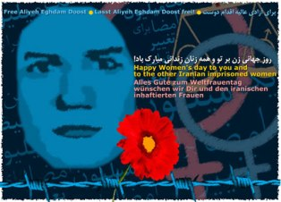

|
|
کارت تبريک روز جهانی زن برای عاليه اقدام دوست/ کانون ره آورد
يكشنبه18 اسفند 1387
انتشار کارت تبريک روز جهانی زن برای عاليه اقدام دوست

کانون ره آورد- به مناسبت ۸ مارس، روز جهانی زن، از سوی کانون ره آورد در شهر آخن آلمان، کارت تبريکی برای عاليه اقدام دوست، فعال کمپين يک ميليون امضا در ايران که هم اکنون در زندان اوين به سر می برد؛ تهيه شده است.
عاليه اقدام دوست از جمله زنانی بود که در روز ۲۲ خرداد ۱۳۸۵ در تجمع اعتراض آميز زنان شرکت کرد و در ميدان هفت تير سوار بر ماشين نيروی انتظامی راهی بازداشتگاه اوين شد و در نهايت شعبه ۱۵ دادگاه انقلاب تهران، وی را به سه سال و چهار ماه حبس و ۲۰ ضربه شلاق محکوم کرد. پس از آن دادگاه تجديد نظر نيز حکم ۳ سال حبس او را تاييد کرد و سرانجام روز ۱۲ بهمن ۱۳۸۷ ماموران اجرای حکم به در منزل وی در شهرستان فومن رفته و وی را تحت الحفظ به شعبه اجرای احکام دادگاه انقلاب تهران برای اجرای مدت محکوميت منتقل کردند.
عاليه اقدام دوست، اولين فعال جنبش زنان است که پس از قطعی شدن حکم خود، به زندان منتقل می شود.
کارت تبريک مزبور به سه زبان فارسی، انگليسی و آلمانی، و به نشانی زندان اوين منتشر شده که در اختيار همه فعالين زن، نهادها، انجمن ها، کانون ها و افرادی که قصد دارند با ارسال آن به نشانی زندان اوين اعتراض خود را نسبت به حکم صادره برای عاليه اقدام دوست اعلام کنند، قرار می گيرد.
به اين منظور همه افراد و انجمن ها می توانند با چاپ اين کارت و سازماندهی در جلب نظر همه کسانی که مايلند کارت تبريک را با نوشته کوتاهی از خود در پشت آن، برای عاليه اقدام دوست ارسال نمايند، در اين اقدام عمومی مشارکت کنند.
نسخه قبل چاپ اين کارت برای دانلود در زير اين توضيح قرار دارد و همه می توانند به سادگی آن را با کيفيت مناسب و در ابعاد يک کارت تبريک منتشر کنند.
کانون ره آورد اميدوار است با همياری بيشتر مدافعان حقوق بشر، اين حرکت هر چند محدود، در راه آزادی عاليه اقدام دوست مؤثر افتد.